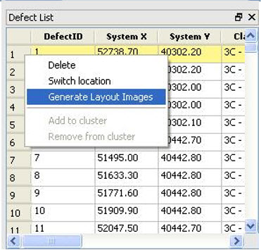
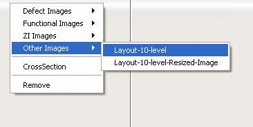
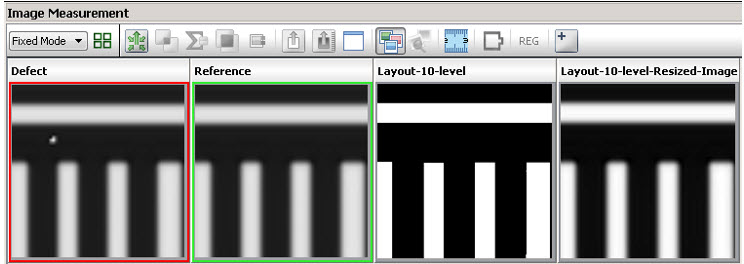

After the data
preparation and correlation stages, layout images can be generated
and displayed for a defect.
Procedure
- Select defect(s) from the
Defect List or Defect Map and then select Generate Layout Images from
the right-click menu.
Figure 1. Generating Layout
images from Defect List
- You can now view the generated
layout images in the Image Measurement Unit window as auxiliary
images. Right-click in a display unit and select from the Other Images list to specify
which layout images should be displayed in the IMU window
Figure 2. Select Layout Images
- Once the images are generated,
click the Auxiliary Image icon
to view the layout images.
Figure 3. Display Auxiliary Images
- In Figure 4, two layout images are generated:
Layout-10-level —
A high resolution layout image. The resolution of this image is
fixed to 1024.
Layout-10-level-Resized-Image —
A low resolution layout image. The resolution of this image is same
as the resolution of the defect or reference image.
Figure 4. Generated Layout Images
Displayed in IMU Window
Generated layout images have default display sizes:
If a defect
has a Sem and TIF image, the pixels and pixel size of the layout
image are the same as the Sem image.
If a defect
has a Sem bit no TIF image, the pixels and pixel size of the layout
image are the same as the Sem image.
If a defect
has no Sem but has a TIF image, the pixels and pixel size of the
layout image are the same as the TIF image.
If a defect
has no image associated with it, the layout image size can vary
from 3 to 10 microns based upon the defect file format (for example,
DEF, LRF, LDF, Klarf).